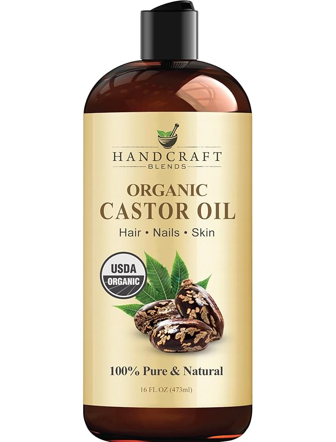
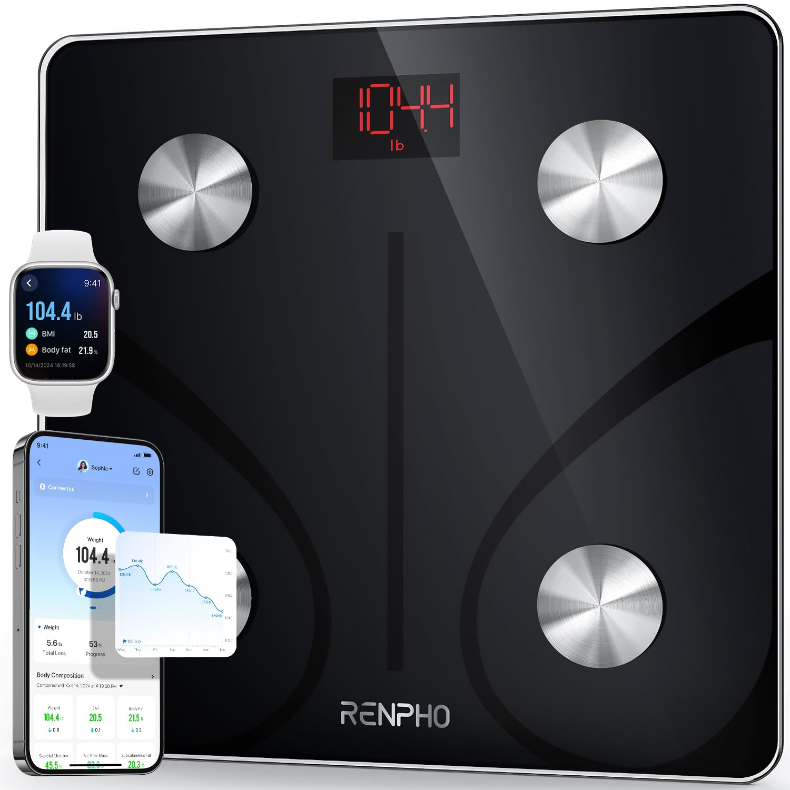
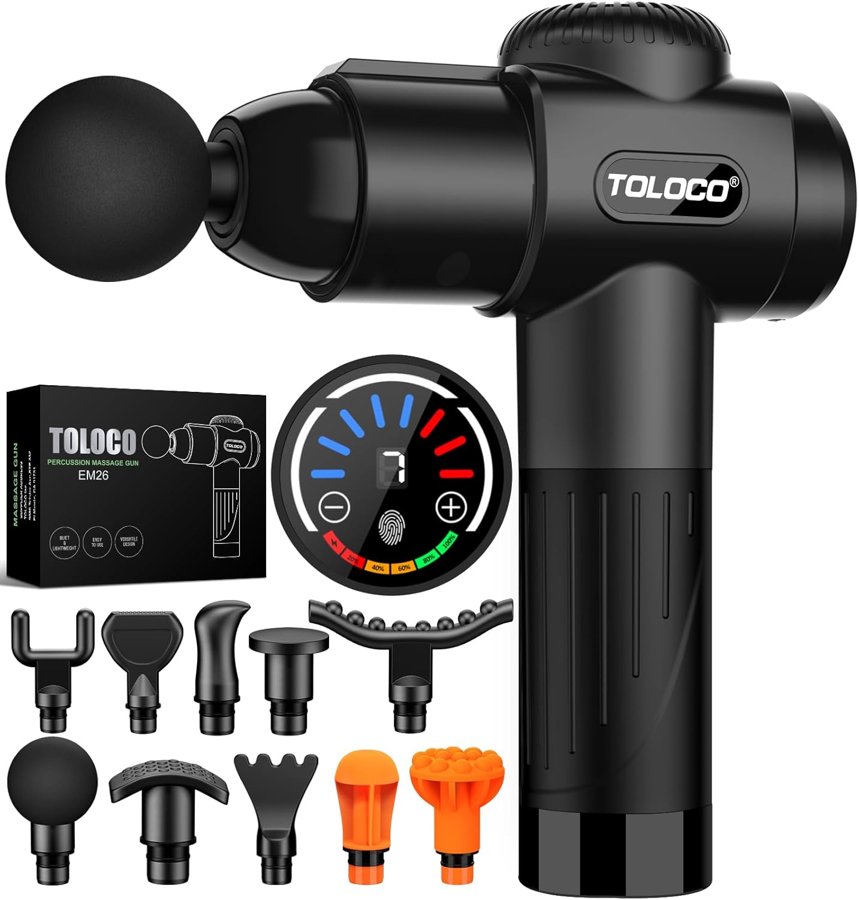
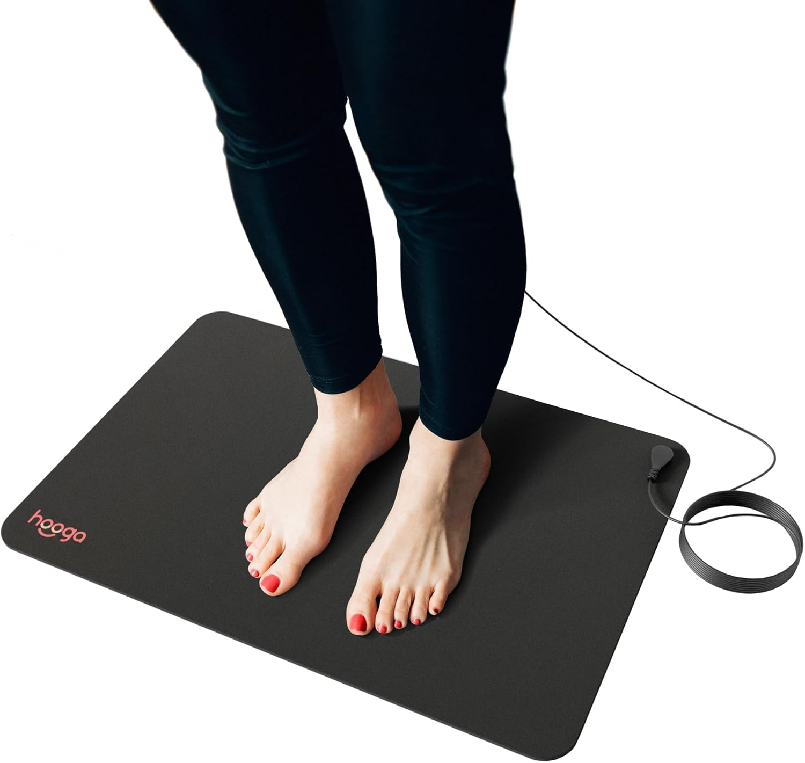
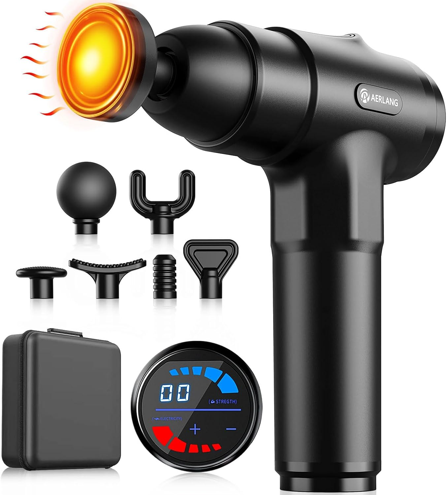

The wellness market is flooded with options, but finding affordable products that actually deliver results can be challenging. We've researched thousands of customer reviews to bring you six highly-rated wellness products on Amazon that provide exceptional value. These products have been tested and loved by thousands of customers, making them reliable additions to your health routine without breaking the bank.
1. Handcraft Blends Organic Castor Oil
★★★★½ (4.6/5 from 36,221 reviews)
Handcraft Blends Organic Castor Oil has become a true multi-purpose wellness staple. This 16 fl oz bottle contains 100% pure, cold-pressed, and hexane-free castor oil that has been verified by thousands of users for its quality and effectiveness. What makes this product stand out is its versatility – it works for hair growth, eyebrow and eyelash enhancement, skin hydration, and even as a massage oil for joints and muscles.
The oil comes in a generous size that lasts for months, even with regular use. Users particularly praise its thick consistency that absorbs well without leaving an overly greasy residue. The expeller-pressed extraction method ensures that all the beneficial properties remain intact, including ricinoleic acid, which gives castor oil its renowned anti-inflammatory and moisturizing properties.
Many reviewers report significant improvements in hair thickness after consistent application, particularly when used on the scalp before bedtime. The oil comes with an easy-to-use applicator that helps with targeted application for eyebrows and lashes, where many users have seen noticeable growth within 3-4 weeks of regular use.
"I've tried numerous hair growth oils over the years, but this organic castor oil has provided the most visible results. My hair feels stronger, and I've noticed significant regrowth around my temples." – Frequent user comment from Amazon reviews
Check reviews for Handcraft Blends Organic Castor Oil on Amazon
2. RENPHO Smart Scale for Body Weight
★★★★½ (4.6/5 from 361,543 reviews)
With over 360,000 reviews, the RENPHO Smart Scale has established itself as a game-changer in home health monitoring. This isn't just a scale – it's a comprehensive body composition analyzer that measures 13 essential body metrics including weight, BMI, body fat percentage, muscle mass, bone mass, and metabolic age.
What truly sets this smart scale apart is its seamless Bluetooth connectivity and user-friendly app integration. The RENPHO app synchronizes with popular fitness platforms like Apple Health, Google Fit, and Fitbit, creating a holistic picture of your health journey. The scale supports unlimited users, making it perfect for families or shared households, with each person able to track their individual progress privately through the app.
The elegant, minimalist design features a tempered glass platform that supports weights up to 400 pounds, with high-precision sensors that deliver consistent readings. Users particularly appreciate the "Baby Mode" feature, which allows parents to weigh their children by simply stepping on the scale while holding them.
Health-conscious reviewers frequently mention how this scale has helped them stay motivated by providing data-driven insights into their fitness progress beyond just weight. The ability to see muscle mass increasing even when weight fluctuates has been particularly encouraging for those on strength training programs.
Check reviews for RENPHO Smart Scale on Amazon
3. TOLOCO Massage Gun
★★★★½ (4.4/5 from 58,395 reviews)
The TOLOCO Massage Gun has revolutionized at-home recovery for thousands of athletes and individuals suffering from muscle tension. This powerful percussion massager delivers deep tissue therapy that previously was only available through professional massage therapists. With a brushless motor that operates at whisper-quiet levels (under 40dB), you can enjoy effective muscle relief without disturbing noise.
What makes the TOLOCO stand out from competitors is its impressive versatility, featuring 10 specialized massage heads designed to target different muscle groups and needs. The round head works well for large muscle groups like quads and hamstrings, while the bullet head reaches trigger points in difficult areas. The U-shaped attachment is perfect for the spine and neck regions, and specialized heads for joints and facial tissue complete the comprehensive set.
Users particularly value the 20 adjustable speed levels, allowing for customized intensity ranging from gentle relaxation to intense deep-tissue work. The ergonomic design makes it easy to reach difficult areas like the middle back, and the long battery life (up to 6 hours of use per charge) means it's always ready when needed.
Physical therapists and athletes repeatedly mention in reviews how this device has helped accelerate recovery between workouts, reduce DOMS (Delayed Onset Muscle Soreness), and improve mobility. Many users with chronic pain conditions also report significant relief when using the device consistently as part of their pain management routine.
Check reviews for TOLOCO Massage Gun on Amazon
4. Boiron Oscillococcinum
★★★★★ (4.7/5 from 30,205 reviews)
Boiron Oscillococcinum has established itself as a go-to homeopathic remedy for flu-like symptoms, earning the trust of over 30,000 reviewers. This 30-dose pack provides quick relief from common symptoms including body aches, headaches, fever, chills, and fatigue, making it an essential addition to any home medicine cabinet.
What distinguishes Oscillococcinum is its unique approach to symptom relief. Unlike conventional medications that may cause drowsiness or interact with other medicines, this homeopathic remedy works with your body's natural defenses. Users particularly appreciate that it's non-drowsy, has no known drug interactions, and doesn't mask symptoms while allowing the body to recover naturally.
The convenient, pre-measured doses dissolve quickly under the tongue without water, making them easy to take anywhere. Many reviewers mention keeping doses at work, in travel bags, and at home for immediate use at the first sign of symptoms. The taste is described as pleasant and slightly sweet, making it appropriate even for those who struggle with traditional medications.
Long-time users frequently comment on how taking Oscillococcinum at the first sign of symptoms often reduces the duration and severity of their illness, sometimes preventing it entirely when taken early enough. Many families report relying on this product for years as their first line of defense during cold and flu season.
"I've been using Oscillococcinum for over a decade whenever I feel the first signs of getting sick. Nine times out of ten, the symptoms never fully develop if I catch them early with this product." – Common sentiment among long-term users
Check reviews for Boiron Oscillococcinum on Amazon
5. Hooga Grounding Mat
★★★★ (4.1/5 from 4,957 reviews)
The Hooga Grounding Mat represents a fascinating intersection of ancient earthing practices and modern wellness technology. This innovative product allows users to simulate the experience of walking barefoot on the earth while indoors, providing the potential benefits of grounding (also known as earthing) in the comfort of your home or office.
This mat uses conductive carbon material to connect users to the earth's natural electron field through a grounded electrical outlet. The included 15-foot cord makes it versatile enough to use while sleeping, working at a desk, or relaxing on the couch. The mat itself is durable yet comfortable, designed to withstand daily use without degrading its conductive properties.
Users report a wide range of benefits from regular grounding, including better sleep quality, reduced inflammation, increased energy levels, and improved mood. Many reviewers with chronic pain conditions note significant improvements when using the mat consistently, particularly for inflammatory conditions like arthritis and fibromyalgia.
What makes the Hooga mat particularly appealing is its unobtrusive design that blends into any environment. Unlike some wellness devices that require active participation, the grounding mat works passively while you go about your normal activities, making it an effortless addition to your wellness routine. Reviewers specifically mention using it under their desk while working, under their sheets while sleeping, or beneath their feet while relaxing.
Check reviews for Hooga Grounding Mat on Amazon
6. AERLANG Massage Gun with Heat
★★★★½ (4.4/5 from 20,312 reviews)
The AERLANG Massage Gun takes percussion therapy to the next level by incorporating heat technology for enhanced muscle relief. This innovative combination addresses muscle tension in two complementary ways: the percussion breaks up knots and improves blood flow, while the heating function helps relax tight muscles and reduces stiffness.
What sets this massage gun apart from standard models is its targeted heat therapy feature that reaches an optimal temperature of 107°F (42°C), providing soothing warmth that penetrates deeper into muscle tissue. Users particularly praise how this dual-action approach provides more complete relief than standard massage guns, especially for chronic back pain, neck tension, and winter-related muscle stiffness.
The device comes with 7 specialized massage heads designed to target different body areas and needs, from large muscle groups to trigger points and joints. With 30 adjustable speeds, users can customize their therapy session from gentle warmup to intensive deep tissue work. Despite its powerful motor, the AERLANG operates at under 45dB, making it quiet enough to use while watching TV or in shared spaces.
Many reviewers mention the impressive battery life, with the 2500mAh battery providing up to 4-6 hours of continuous use per charge. The ergonomic design and lightweight construction (1.8 pounds) make it easy to use on yourself without assistance, even for hard-to-reach areas like the middle back.
Check reviews for AERLANG Massage Gun with Heat on Amazon
Why These Products Stand Out
These six products have earned their place in our top recommendations not just for their affordability, but for the exceptional value they provide. Each has been thoroughly tested by thousands of real users who consistently report significant benefits to their health and wellness routines.
Whether you're looking to address specific concerns like muscle tension, monitoring fitness progress, supporting natural healing, or enhancing your beauty routine, these affordable investments can make a meaningful difference in your daily well-being. The best wellness routine is one that you can maintain consistently, and these accessible products make it easier to prioritize your health without financial strain.
As with any wellness product, individual results may vary, and it's always wise to consult with healthcare professionals about specific health concerns. However, the overwhelming positive feedback from tens of thousands of users suggests that these items deliver real benefits for many people seeking affordable wellness solutions.